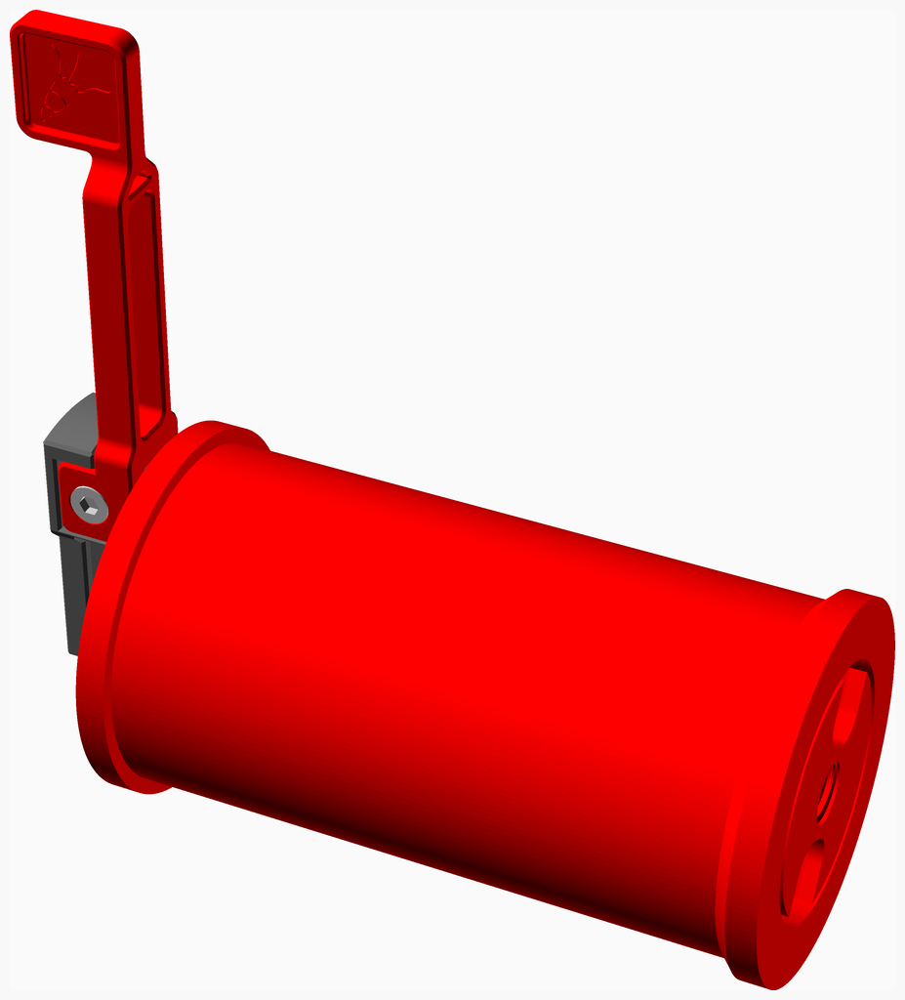
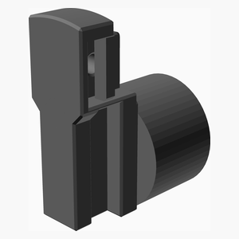
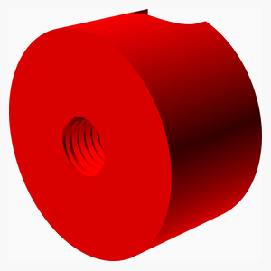
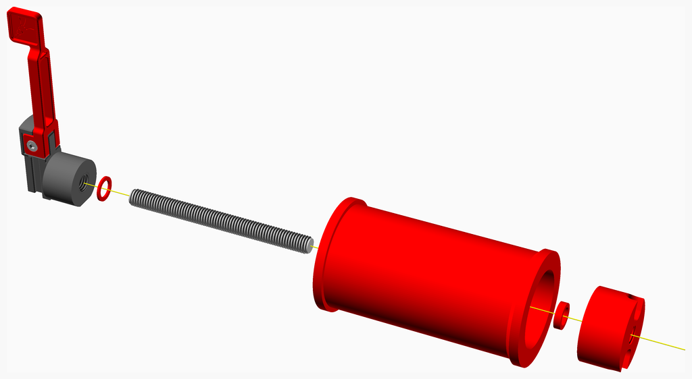

This is a bearing version of the filament spool holder of the Enraged Carrot Feeder Patch (ERCP) buffer.
The original design can be found at ercf.
This modification is based on the version taken on August 2023. It remove lots of friction compare to the original one (PTFE version). I'm getting less failure rate with the bearing version.
It support filament spool up to 80 mm wide.
It uses two 608 bearing plus 95 mm of thread rod. That threaded rod could be M8 (metric) or 5/16" (imperial). I provide the STL for both version.
By the way, the term "vitamin" simply mean non printer part. Apparently the origin comes from reprap reprap.
Documentation generated by the OpenSCAD library NopSCADlib.

| Roll | Main | TOTALS | |
|---|---|---|---|
| Vitamins | |||
| 2 | . | 2 | Ball bearing 608-2RS 8mm x 22mm x 7mm |
| . | 1 | 1 | Threaded rod M8 x 95mm |
| 2 | 1 | 3 | Total vitamins count |
| 3D printed parts | |||
| . | 1 | 1 | bearingSH_5_16.stl |
| . | 1 | 1 | bearingSH_M8.stl |
| . | 1 | 1 | nut_5_16.stl |
| . | 1 | 1 | nut_M8.stl |
| 1 | . | 1 | roller.stl |
| . | 1 | 1 | spacer3mm.stl |
| . | 1 | 1 | spacer4mm.stl |
| 1 | 6 | 7 | Total 3D printed parts count |
| Qty | Description |
|---|---|
| 2 | Ball bearing 608-2RS 8mm x 22mm x 7mm |
| 1 x roller.stl |
|---|
|

| Qty | Description |
|---|---|
| 1 | Threaded rod M8 x 95mm |
| 1 x bearingSH_5_16.stl | 1 x bearingSH_M8.stl | 1 x nut_5_16.stl |
|---|---|---|
|  |  |
 |
| 1 x nut_M8.stl | 1 x spacer3mm.stl | 1 x spacer4mm.stl |
|---|---|---|
|  |  |
 |
| 1 x roll_assembly |
|---|
